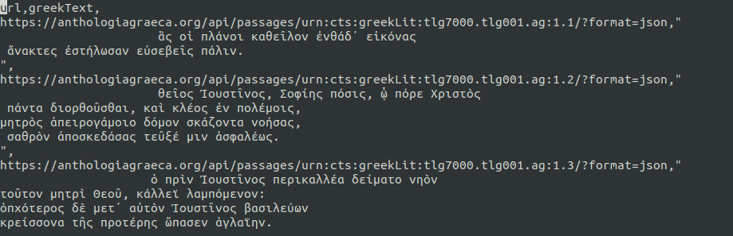
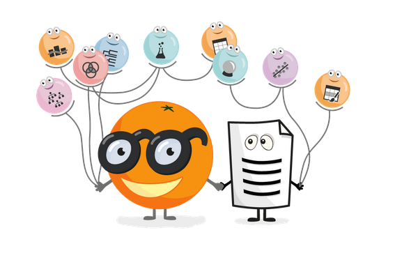
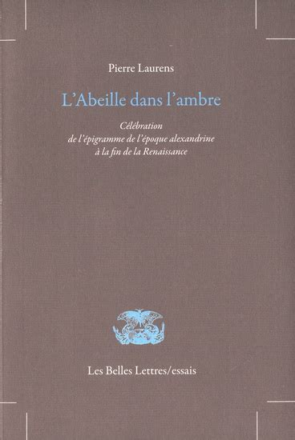

SCI6203
À propos
Accueil
Categories
All
(11)
code
(2)
information
(1)
journal
(8)

Écriture du TP02
journal
Compte-rendu du TP02 : description du corpus de données.
Yann Audin & Roch Delannay
Nov 8, 2022
Récupération du corpus 2
code
Récupération des épigrammes en grec via l’API de l’Anthologie grecque pour former notre corpus.
Roch Delannay
Nov 4, 2022

Test du logiciel Orange
journal
Premiers tests avec l’outil Orange Data Mining.
Roch Delannay
Nov 2, 2022
Revue de littérature : Williams et al..
journal
Court résumé de l’article de A. C. Williams, “Identification of Ancient Greek Papyrus Fragments Using Genetic Sequence Alignment Algorithms”.
Roch Delannay
Oct 20, 2022
Revue de littérature : Buchler et al.
journal
Court résumé de l’article de Büchler, Marco; Geßner, Annette; Eckart, Thomas; Heyer, Gerhard. (2010).
Roch Delannay
Oct 17, 2022
Revue de littérature : Crane et Bamman
journal
Court résumé de l’article de Bamman, D et Crane, G. (2009).
Roch Delannay
Oct 16, 2022
Récupération du corpus
code
Récupération des épigrammes en grec via l’API de l’Anthologie grecque pour former notre corpus.
Roch Delannay
Oct 14, 2022

Revue de littérature : Laurens
journal
Court résumé du chapitre 3 de
L’Abeille dans l’ambre
.
Roch Delannay
Oct 8, 2022
Présentation du sujet
journal
Présentation et probématisation du projet de fouille de texte
Yann Audin et Roch Delannay
Oct 7, 2022
Partie 1. Définition de la problématique et présentation de travaux reliés
information
Consignes et plan pour le premier rendu.
Roch Delannay
Sep 28, 2022
From Data Mining to Knowledge Discovery in Database: Une approche littéraire
journal
Résumé de l’article de Fayyad.
Yann Audin
Sep 21, 2022
No matching items